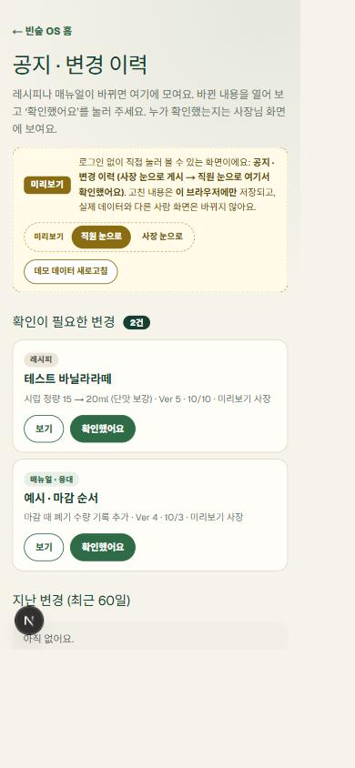
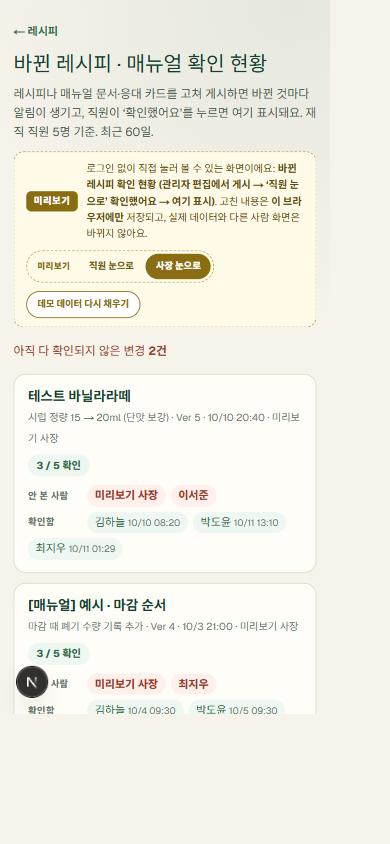
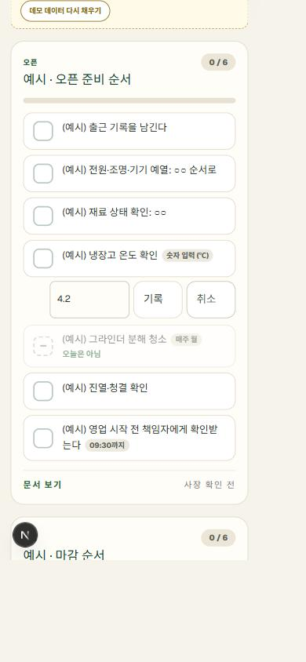
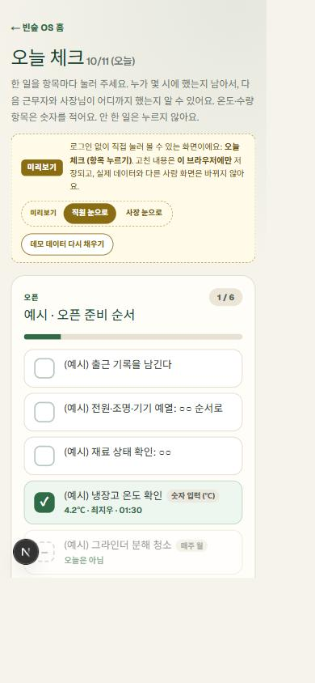
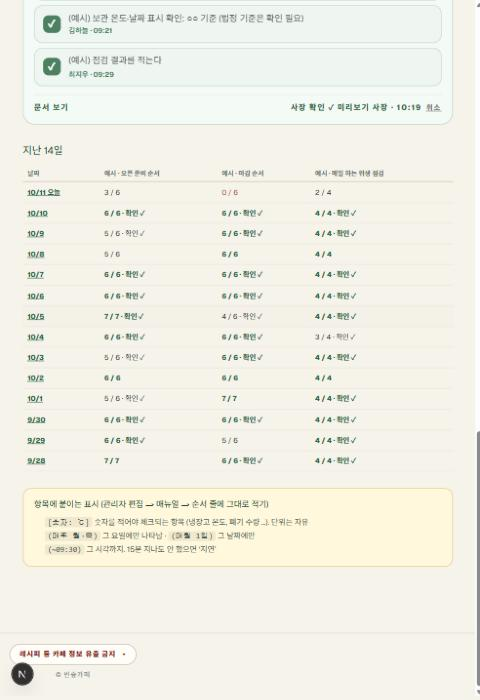
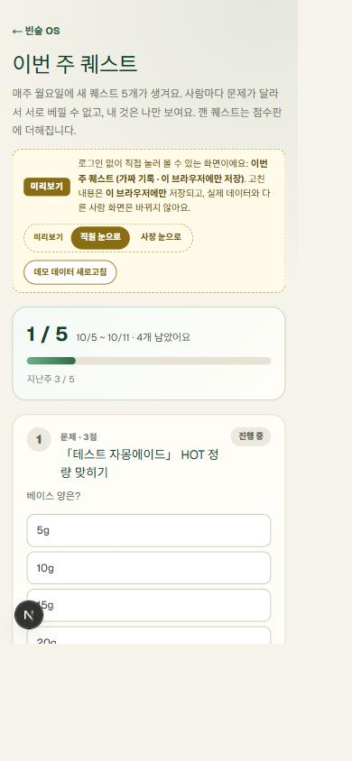
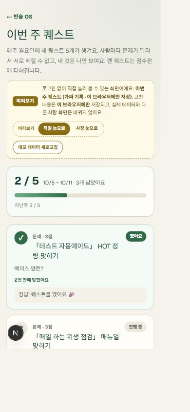

양진서의 교육 참여 기록 · 배민 AI 장사스쿨 실전 캠프
직원이 저에게 묻지 않아도 레시피와 매뉴얼을 스스로 찾아 같은 품질로 만들고, 했다는 기록이 남는 매장. 9월 17일부터 10월 12일까지, 코드 한 줄 쓰지 않고 말로 만든 과정과 매장에서 달라진 점을 소개합니다.
빈숲 OS 시연 열기 ↗ 가상 데이터 · 로그인 없음한 기능이 될 때마다 직원 눈·사장 눈으로 눌러 보고, 자동 검사를 돌리고, 기록을 남겼습니다.
왜 만들었나요?
작은 카페입니다. 레시피와 매뉴얼은 제 머리와 종이, 카톡에 흩어져 있었고, 직원들은 젊고 성실하지만 AI를 어떻게 쓸지는 몰랐습니다.
레시피가 글로 있어도 각자 기억에 의존해 기억나는 대로. 바꿨다고 말해도 누가 들었는지 모르고, 사람마다 레시피가 달라집니다. 제일 많이 오던 연락은 "발주해야 돼요", "이거 어디서 사요", "이거 없어요 급해요".
레시피·매뉴얼·응대북·오늘 체크·교육·시험·퀘스트·칭찬·인수인계·물어보기가 한 주소에. 바뀐 건 알림으로, 누가 확인했는지 사장이 봅니다.
"외부 유출이 완전 싫거든" — 로그인 없이는 메뉴 이름도 안 보이고, 사진엔 보는 사람 이름·날짜가 새겨지고, 누가 언제 무엇을 봤는지 남습니다. 공개 시연판엔 실제 레시피가 한 줄도 없습니다.
캠프 전부터 "자영업자야말로 AI를 무조건 써야 한다"고 생각했어요. 반복 업무가 많고 신경 쓸 게 너무 많으니까, 체계화되면 진짜 좋을 것 같았거든요. 컴퓨터 전공자보다 실무 경험 많은 사람이 잘 쓸 때 효과가 더 크다고 믿었습니다.— 주변 친구들에게도 "무궁무진하다, 공부해 봐라" 하고 다녔습니다. 그러다 배민에서 체계적으로 배우게 돼서 너무 좋았습니다.
무엇을 만들었나
코드는 한 줄도 직접 쓰지 않았습니다. 기획안부터 말로 시키고, 한 기능이 될 때마다 AI가 검사를 만들고 저는 눌러 봤습니다.
"외부 유출이 완전 싫거든" → 로그인·워터마크·열람 기록·자동 로그아웃
"문제가 다 공개되어 있으면 안 돼, 사람마다 문제가 달랐으면" → 사람마다 다른 퀘스트, 정답은 서버에만
"나중에 엑셀로 주면 네가 알아서 자리에 넣어 줄 거지?" → 엑셀 표 붙여 넣기 '가져오기'
시연 장면 3개
시연판은 가상의 직원 4명이 6주 동안 써 온 가게처럼 채워져 있습니다. 화면의 "직원 눈으로 / 사장 눈으로"로 같은 화면을 바꿔 봅니다.







매장에서 달라진 점
앞서 만든 포스기 빈숲OS·발주표는 직원들이 실제로 쓰고 있고, 이 매뉴얼북은 10/12 점검을 끝내고 지금 실제 데이터를 넣는 단계입니다.
직접 잰 값은 아직 없음 위는 느낌입니다. 레시피 질문 횟수와 연락 건수는 실제 데이터를 넣은 뒤 1주일 재서 숫자로 말하겠습니다.
AI가 나온 건 알아도 어떻게 쓸지 몰랐던 친구에게 포스터 만드는 법을 알려줬더니, 흥미가 생겨 직접 맡게 됐습니다. 바리스타로 일하면서 "이런 추가적인 일도 할 수 있구나" 하는 만족감.
대학 다니며 일하는 친구들이 제가 OS·발주표·레시피를 만드는 걸 보면서 좋아하고, 직장에 자부심이 생겼습니다. 서로 AI를 써 보고 업그레이드하려고 함께 노력합니다.
작게 하나씩 만들던 것들이 한 곳에 모인 집약체가 됐습니다. 계속 고도화해서 '빈숲 백과사전'처럼 체계적인 데이터로 쓸 겁니다. 이번에 만든 건 전부 씁니다.
문서 1장만 고쳤는데 알림이 26건 나간 것(창고가 항목 순서를 바꿔서 → 순서 무관 비교) · 직원이 동료 이름을 못 읽어 칭찬을 못 보낼 뻔한 창고 규칙(코드 검토에서 잡음) · "만들어 보기" 퀘스트의 과녁이 움직이던 것(주 시작 전 기록으로 고정) · 다른 사장님에게 배운 것은 그대로 베끼지 않고 카페에 맞게 바꿈.
① 실제 레시피·매뉴얼을 엑셀로 한 번에 넣고 직원과 써 보기 → 질문 횟수·연락 건수를 숫자로 ② 챗봇에 AI 붙이기(찾은 한 건만 풀어 말하게) ③ 매장 공용 패드 모드 ④ 뼈대를 다른 사장님이 엑셀만 넣어 쓸 수 있게 정리